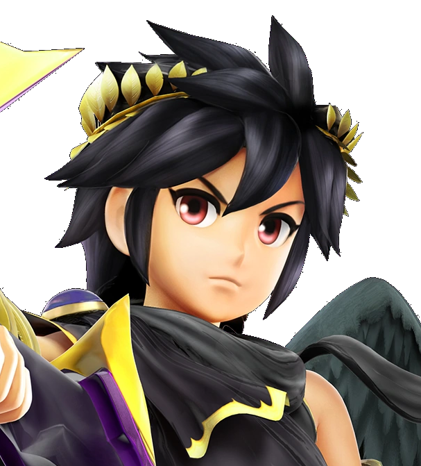
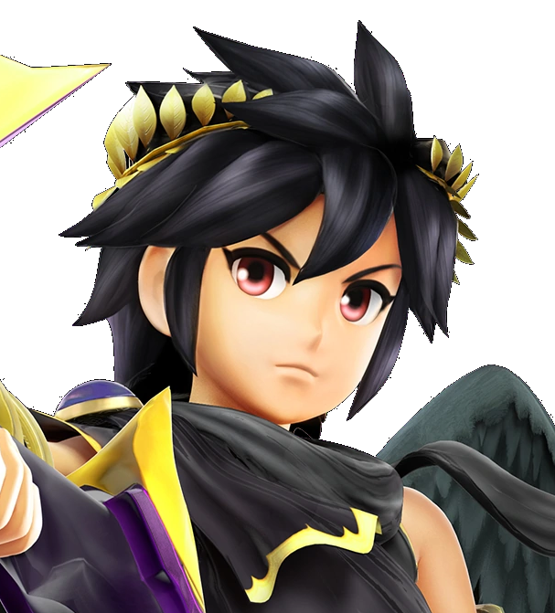

Fox
An esteemed captain of space and the leader of his own team...who wouldn't follow such a charistmatic leader into this perilous yet adventurous game? Steering the missions like one of his own spaceships, Fox grips the leadership wheel well, displaying confidence and a fervor to win. He's clever, always ready to flash a grin, but also cares very deeply about the other players as a team. Fox joins with a motivated attitude, even inspiring feelings of unity and teamwork among everyone within just the first five minutes of the game. A noble captain indeed...but could he be the Mole?
Peach
The most loyal and dainty of all...the princess of the Mushroom Kingdom joins the game with a carefree demeanor and questionable motives. She is sweet, kind, and ultimately the fairest of them all. As a natural overseer and ruler of her kingdom, she finds exerting copious amounts of stress in the game of 'The Mole' as unnecessary, preferring much more to sit back and hope the rest of the game goes smoothly. She also seems to understand the game very well and uses it to her advantage. But where does she get her knowledge from? Could it be that Peach may be the traitor aboard?
DK
He's the first member of the DK crew...and also the first, well, only player to introduce himself into the game via loud YELL. You actually see him vigorously hollering for more than half of the time he's in the game, either passionately with a large smile or angrily with palpable fury. DK jumps right into missions, ready to play. But this boisterous guy actually doesn't care how the game goes: all this energetic ape really wants is to have a good time. But does that mean he'll do it by covertly sabotaging the game as the chosen agent?
Joker
How stylish, intelligent, and sneaky do you want your Mole player to be? Joker, a show-off in his ways and excelling both mentally and physically in challenges, fits almost every criteria for a Mole player. He does his best to play well, which is why he claims he can't be the Mole. Yet, he has many tricks up his sleeve, and maybe the moments he does help are just instances when others are looking at him. He doesn't want to cause havoc...does he? OR, are his masked, subtle smiles just deceptions as the selected deceiver?
Wii Fit
Wii Fit is one of the strongest players both physically...and tauntingly. "I hope you don't mind second place," she teases. She is sassy in her sentiments and as pompous as she is pretentious. Wii Fit eagerly boasts an active body, and unfortunately for some others, an active mind that's not afraid to speak what she's thinking. Much to her own chuckles, she knows she can sometimes appear rather condescending and brash to others. But when she does see strength and value in someone else...she tends to treat them nicely. Hmm...what an interesting character...and even more if this trainer was indeed the treacherous traitor.


 
